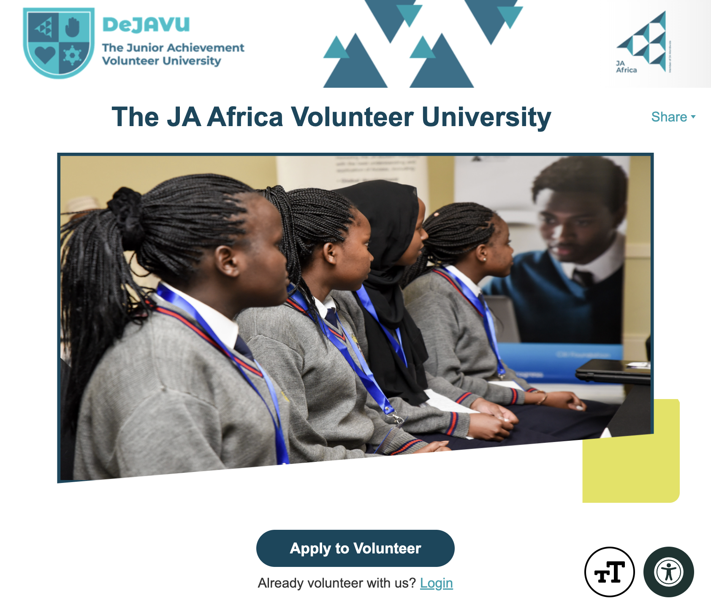
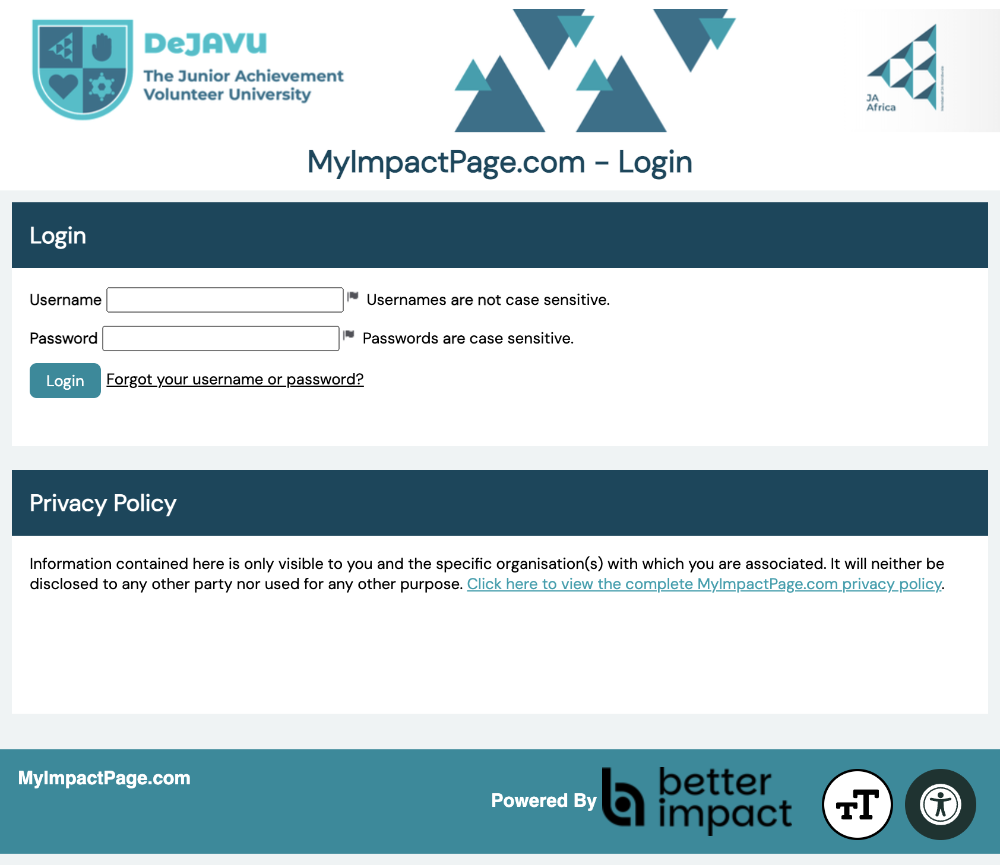
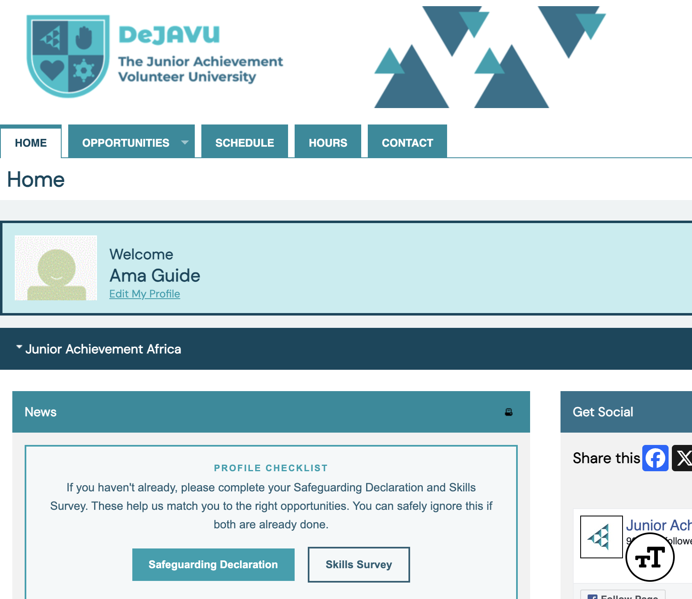

Volunteer guide
Audience · VolunteerLog In to Your Account
Sign in to the DeJAVU volunteer portal to view opportunities, your schedule, hours, and profile.
Portal: volunteers.ja-africa.org
Open the DeJAVU homepage
In your browser, go to volunteers.ja-africa.org.

LoginClick Login
Under the Apply to Volunteer button, click Login (next to “Already volunteer with us?”).
You can also go straight to MyImpactPage.com and sign in there. See the Better Impact guide on logging on to your profile.
Enter your username and password
On the MyImpactPage.com login screen, type your Username and Password, then click Login.
- Usernames are not case sensitive.
- Passwords are case sensitive.

Click LoginForgot your details? Use Forgot your username or password? next to the Login button. Too many wrong attempts can lock your account for 10 minutes — wait, then try again.
You are on your volunteer home page
After a successful login, you land on your DeJAVU home page. You will see a welcome message with your name, plus menu links for Opportunities, Schedule, Hours, and Contact.

Welcome message Main menuIf your Profile Checklist still shows Safeguarding or Skills Survey buttons, complete those next so you can access opportunities.